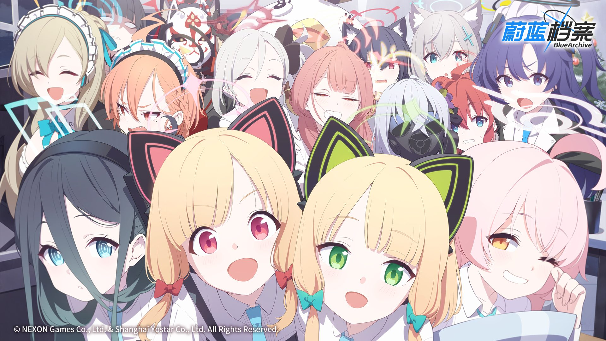
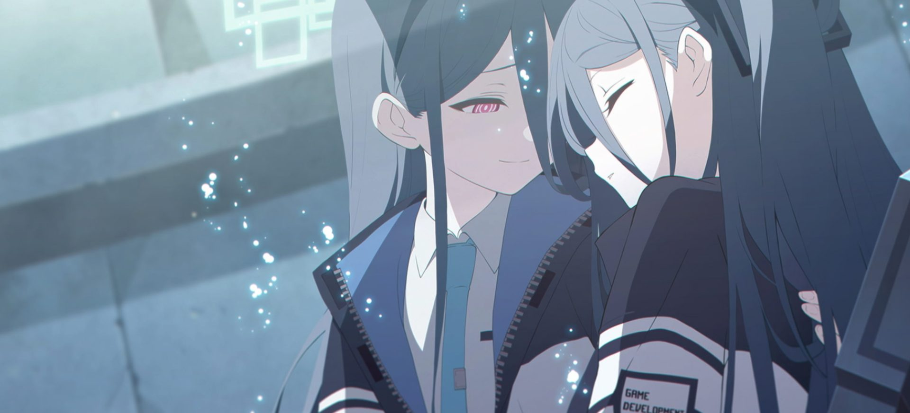

— 在基沃托斯，与你的日常就是奇迹 —

VOL.1故事的开端。身为老师的你，来到了面临废校危机的阿拜多斯高中。在这里，你结识了为了偿还巨额债务而奋斗的“对策委员会”的少女们。
为了夺回被查封的学校，她们骑着自行车，向着沙漠深处的废弃矿区进发。面对强大的敌人和绝望的债务，少女们依然没有放弃。

VOL.2为了解决阿拜多斯的问题，你与千禧年科技学院的“游戏开发部”产生了交集。为了寻找传说中的“G.Bible”，你们深入废墟，展开了一场充满游戏与黑客元素的冒险。
在这里，你们唤醒了一位沉睡在废墟中的勇者——爱丽丝。为了让她体验这个世界的“游戏”，大家展开了一场别开生面的冒险。
基沃托斯史上最大的危机爆发。在崔尼蒂和格黑娜即将签订和平条约之际，暗藏的阴谋与背叛浮出水面。
面对阿里乌斯分校的无情袭击，老师与学生们在硝烟中宣誓，为了守护那脆弱的和平，展开了绝望的抵抗。这是一场关于信任、背叛与救赎的史诗。